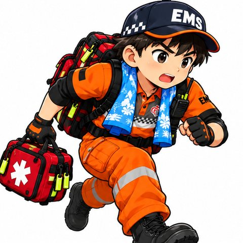
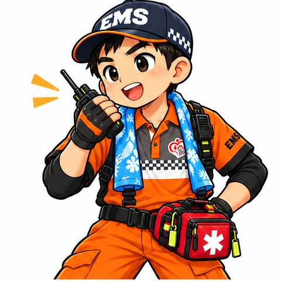
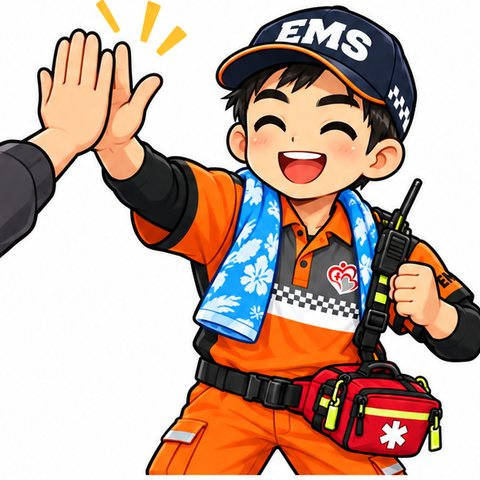
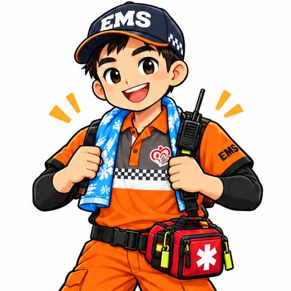
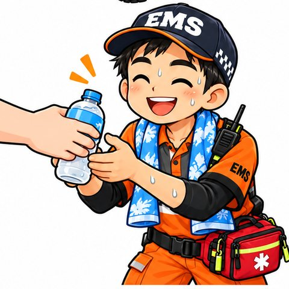
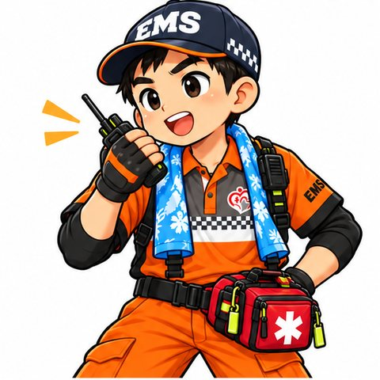
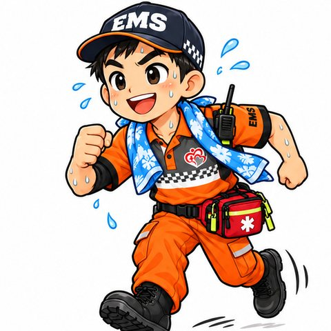
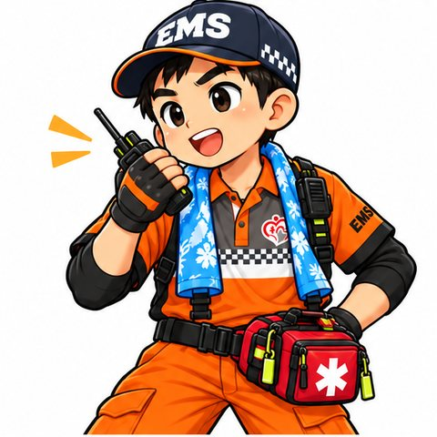
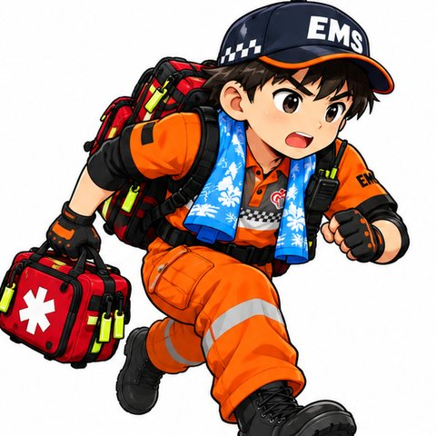

👆 點一則看漫畫和重點
進香衛教 #01
抽筋
小腿突然抽筋？別硬撐！


重點整理
- 先停下來坐好腳伸直，不要硬走
- 慢慢伸展把腳尖往身體方向扳，維持一下，再輕輕按摩
- 補充電解質喝運動飲料或電解質水，少量多次
- 休息夠了再走抽筋停了、腳放鬆了，再慢慢走
⚠️ 有這些情況，請找醫護團
回到上面 ↑
- 反覆抽筋、休息後也不好
- 同時頭暈、很虛弱、尿很少
進香衛教 #02
扭傷・擦傷
路不平腳扭到了？先休息、冰敷！



進香衛教 #03
曬傷
皮膚紅紅刺痛？防曬要記得補擦！



重點整理
- 出門前擦防曬SPF 30 以上，流汗後約每 2 小時補擦
- 遮起來寬邊帽、袖套、淺色薄長袖
- 少量多次喝水不要等口渴才喝
- 曬傷冷敷降溫冷毛巾敷，起水泡不要弄破
⚠️ 有這些情況，請找醫護團
回到上面 ↑
- 大片起水泡、發燒、發冷
- 頭暈、頭痛、噁心想吐
進香衛教 #04
中暑・熱衰竭
頭暈想吐、全身無力？先到陰涼處！



進香衛教 #05
腳底水泡
腳熱熱刺刺的？先停下來處理！



重點整理
- 一刺痛就停腳一發熱、磨紅，馬上處理
- 水泡不弄破小水泡不要刺破，貼人工皮保護
- 穿合腳舊鞋不要穿新鞋上路
- 排汗襪多帶襪子濕了就換，休息時脫鞋透氣
⚠️ 有這些情況，請找醫護團
回到上面 ↑
- 紅、腫、熱、痛越來越嚴重或流膿
- 糖尿病的人腳受傷
進香衛教 #06
需要幫忙時
不舒服不要硬撐！找穿橘衣的我們！


